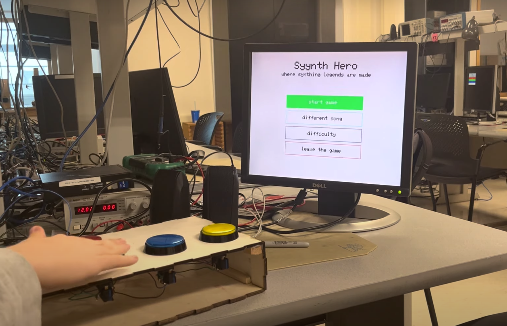
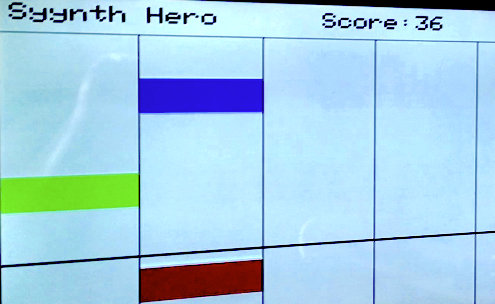

Introduction
Link to our demo. Note that in the Appendix section we state that we approve of this video and site being on the course site.
Syyynth Hero: where synth legends are made.
We created a game that is a cross between Piano Tiles and Guitar Hero, made to teach you how to play the synth with a variety of songs to choose from. We started this project with the intent of making a game that could teach you how to play an instrument using songs and a button system. Our project was inspired by rhythm games like Piano Tiles and Guitar Hero, and our interface looks like a simplified version of these games, with tiles (called NoteBars) that progress down the screen. When you press one of the buttons, it plays a corresponding note. The goal is to correctly press the notes of each song at the right time until the song ends. Correctly pressing a note increases your score, and the goal is to get the highest score possible. A player knows when the button needs to be pressed because the tile overlaps with the scoreline on the VGA screen, and the button lights up as well. We hope you enjoy our creation and hopefully get to try to play the game at some point!

Image of the game's main menu

Image of gameplay which contains 3 NoteBars on screen
Brief Overview of Development Process
We started the project by designing the GUI (Graphical User Interface) and displaying that design to the VGA monitor, since that is the aspect of the project that could be easily changed and for which we could make visible progress. This started as drawing the main game screen, to adding randomly floating notes that would come down the screen and wait to be clicked. We then designed the buttons and laser-cut wooden frame for the arcade-like system we had. Once this was built, we tested each of the buttons by connecting them to the RP2040 and displaying a distinct output to the VGA screen. At this point, we had a working prototype similar to Piano Tiles but without any music. We then used direct digital synthesis (like in the crickets lab) to simulate the sound of a synth and created a standard data form for which we could add multiple songs to the game. The finishing touch was making the button LEDs light up when the corresponding tile was on the black line, indicating the user should press the button. Once we finished this, we had a fully functional Syynth Hero game!